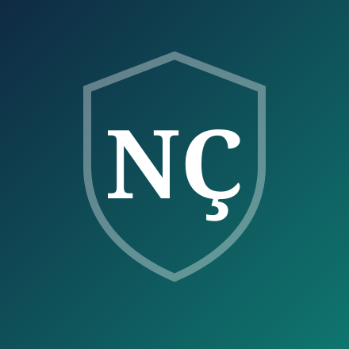

Hakkımda

🎓 Kapadokya Üniversitesi
Bilgi Güvenliği Teknolojisi | 2. Sınıf
💻 Python • C# • HTML • CSS • JavaScript
🔐 Siber Güvenlik ve Yazılım Geliştirme
Merhaba! Ben Nisa Nur Çelik. Kapadokya Üniversitesi Bilgi Güvenliği Teknolojisi programında 2. sınıf öğrencisiyim. Teknolojiye ve bilişim dünyasına duyduğum ilgi doğrultusunda eğitimime devam ediyor, özellikle siber güvenlik, yazılım geliştirme ve programlama alanlarında bilgi ve becerilerimi geliştirmeyi hedefliyorum.
2026–2027 eğitim-öğretim yılı güz döneminde Bilgi Güvenliği ve Siber Güvenlik Temelleri, Nesne Tabanlı Programlama, Python ile Programlama – I, Veri Yapıları, Web Tasarımı, İngilizce – III, Mesleki Etik ve Danışmanlık derslerini alıyorum. Bu dersler sayesinde hem teknik bilgilerimi geliştiriyor hem de mesleki sorumluluk, iletişim ve problem çözme becerilerimi güçlendirmeye çalışıyorum.
Nesne Tabanlı Programlama dersinde C# ve Windows Forms kullanarak uygulamalar geliştiriyor, Python ile Programlama ve Veri Yapıları derslerinde algoritmalar ve programlama mantığı üzerine çalışıyorum. Web Tasarımı dersinde ise HTML, CSS ve JavaScript kullanarak kullanıcı dostu, işlevsel ve farklı ekran boyutlarına uyum sağlayabilen web sayfaları hazırlamayı öğreniyorum.
Bilgi güvenliği alanında özellikle verilerin korunması, dijital sistemlerin güvenliği, siber tehditler ve güvenli yazılım geliştirme konularına ilgi duyuyorum. Yeni teknolojileri araştırmayı, farklı programlama araçlarını keşfetmeyi ve öğrendiğim bilgileri uygulamalı projelerle pekiştirmeyi önemsiyorum.
Gelecekte siber güvenlik ve bilişim teknolojileri alanında kendimi geliştirerek mesleki bilgi ve deneyim kazanmayı hedefliyorum. Bu kişisel tanıtım web sitesini BGY207 Web Tasarımı dersi kapsamında HTML, CSS ve JavaScript kullanarak hazırladım.
Eğitim ve Beceriler
Derslerim ve becerilerim
| Ders | Kullandığım araç | Düzeyim |
|---|---|---|
| Veri Yapıları | Python | Orta |
| Nesne Tabanlı Programlama | C# (WinForms) | Temel |
| Web Tasarımı | HTML, CSS, JavaScript | Temel |
Hedeflerim
- Web Tasarımı dersini başarıyla tamamlamak
- Python ve C# bilgimi projelerle geliştirmek
- Bilgi güvenliğinin temel konularını öğrenmek
İlgi alanlarım
- Bilgi güvenliği
- Yazılım geliştirme
- Yeni teknolojileri denemek